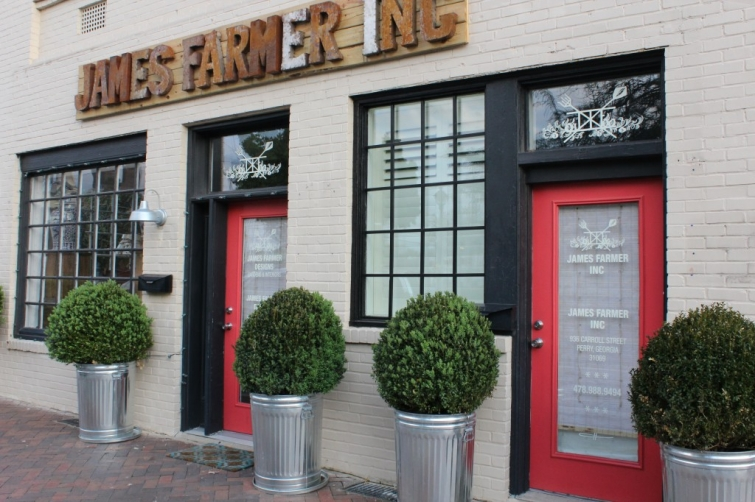

.png)
.PNG)
.PNG)
.PNG)
.PNG)
.PNG)
.JPG)
.JPG)
.PNG)
.PNG)


If you were around Talk of the House back in December, you may remember the above photo from the Christmas Traditions: Ribbon post. And you might also remember that this gorgeous room was done by James Farmer in the Atlanta Homes and Lifestyles Christmas house. Do you remember those wonderful drapes?? I fell in love with them big time.
Now take a look here…notice anything???
Oh yes. That is the same beautiful drapery fabric in the soon to open Perry, Georgia shop of none other than…

James Farmer. Don’t you just love those cans with the boxwood plants in them? I was lucky enough to get a sneak peek in the shop when I was on my spring break. They have not nailed down an opening date, but whenever they do open, it will be filled with gorgeous pieces of furniture and accessories. His office is right next door where he does some of his design work. (I love that logo.)

Here are two more photographs for you to have a peek inside the shop.

To say that James is a busy guy would be an understatement. He did the design for this space in the 2012 Atlanta Symphony Orchestra Show House.
He just finished doing a “son’s room” with Maggie Griffin (another local talent) in the 2013 Show House which opens this Saturday, April 20. (Information here.) He is this year’s spokesman for the American Camellia Society and recently returned from a speaking engagement in Napa. He wrote a number of articles for Southern Living as an editor at large last year including this one on fall style.
He has designed spaces for the Cashiers Designer Show House. (Don’t you think those buffalo check pillows would be perfect on my porch?)
He has been on the Today Show. (Yes, really.) toky.com
toky.com
This Auburn grad has pretty much done it all. If you need a room decorated with Southern style,
he can do it.
If you need a table arrangement made, he can do it.
If you need a bride’s bouquet (or any wedding floral design), he can do it. allthingsfarmer.com
allthingsfarmer.com
If you would like to read a good book …
on gardening.. A Time to Plant: Southern-Style Garden Living
A Time to Plant: Southern-Style Garden Living
or porches… Porch Living
Porch Living
or wreaths
or drinks… Sip and Savor: Drinks for Party and Porch
Sip and Savor: Drinks for Party and Porch
he has you covered.
Now if you need some good Southern cooking, not only does he have you covered there…
but he has also been cooking with Paula Deen on her show, Paula’s Best Dishes. The episode airs this Saturday, April 20. (Check the schedule here.)

And you can read his post about filming the show here.
Did you know he has a wonderful new cookbook out with page after beautiful page filled with Southern recipes? I have made a number of the dishes myself, and you will love them.
 Time to Cook, Dishes from My Southern Sideboard
Time to Cook, Dishes from My Southern Sideboard
AND not only did I get a sneak peek in his shop on my spring break, but James was also gracious enough to sign a copy of his new book for me.

Actually the book is for you. I am giving one of you this signed copy of James’ new book. Just leave a comment on any post that publishes between today and midnight on Tuesday, April 23,2013 for a chance to win. (Or all of them that I publish between now and then for more chances.)

There is much more that I could tell you about James, but this post has gotten waaaaaaay too long. So you just need to check out his blog at AllThingsFarmer.com to see more of his work and keep up with what he is doing. But you’ve got to promise me you will come back to see me sometime! Deal? 🙂
I will leave you with another talk-about question today:
What would be your favorite Southern dish to cook?
I always love to hear from you.
p.s. Updated…2014. James has another cookbook out you will enjoy. 🙂

Dinner on the Grounds: Southern Suppers and Soirees
*****************Giveaway is now closed.*****************


.PNG)
Hi, Kelly. Do I want to talk about houses? Boy, do I ever! My husband and I are thinking about building and I am looking for a craftsman/cottage style floor plan that meets all our needs. When this house is built, that is it! We will live there until we die, so I want to get it right. My problem is analysis paralysis. I’ve looked at literally hundreds of plans, but cannot find what I want. Any suggestions for me?
So looking forward to your reply,
Donna
———————————————————————
Analysis paralysis is a good term. Everyone’s needs are different, so what works for one person of course may not work for another. We looked for years and toured many open houses – taking photos and writing notes along the way. We started with a Southern Living plan – Lakeside Cottage, but even after purchasing the blueprints we made MAJOR changes – i.e. moving the master bedroom and the screened porch, totally reconfiguring an entire wing, and using a room on the plan for something totally different than what it says. (And we knew when we purchased the blueprints we were going to do that.) So you can find a plan that you like and make changes. I have often said that I would like to build Blount Springs Retreat if we were building again, but even with that, I am sure there are changes we would make. Take a plan that has an exterior you like to a builder and ask if all your requirements can be done in the floor space available in the plan. A good builder should be able to tell you if something would work. I had a lot of requests: no porch off the great room, 3 separate bedrooms, walk in closets in all bedrooms, a porch off the kitchen, a window in the kitchen, wood floors throughout, a playroom, an office, tons of bookcases throughout the house, a separate pantry. I wish we would have put in a linen closet and a bigger space in the dining room and the laundry area, but if that is all that I would change, I don’t think that is too bad. Our house is very livable. Good luck with finding or creating a plan that you love!
Kelly
I love James Farmer and follow his blog. Your Decemebr post from last year was what turned me on to him, I loved that room. I would love to have his cookbook.
It is hard to say what my favorite southern thing to cook is, there are so many. One thing I love to make is pimento cheese. You have to be a southerner to appreciate it and I could eat it every day.
Thanks again for your wonderful informative blog and the great giveaway.
Would love to win! Thanks!
-Trish
I just found your blog from Pinterest and I am so happy I did. I love Farmer. He is from Alabama. My husband and I have been trying to relocate to Auburn for a few years now. Still looking for a job there. It is such a quaint little town with tons of spirit. My husband’s family is from that area. They may even know James. Love his style. So yummy and southern. I would love the cookbook to try some good souuthern dishes for my hubby. Out anniversary is the 24th. I could for sure whip him up a great southern meal with Farmer’s help!
This is the first time I’ve seen your blog! Love! I love you & James!!
Love his style!
Pick me, pick me, pick me!!!! I LOVE James!!!
I’m in love with those drapery as well! Wishing they were in my living room!
I am celebrating my Birthday Month and this would be a lovely gift to me!
Thank you for introducing this Northern Girl to James Farmer!
Just discovered your blog. You’ve got it down perfectly and James Farmer has as well. Would love his new cookbook…sounds like a Southern classic.
What a fabulous giveaway! I was not familiar with this guy – amazingly talented! Thanks!
Love the pictures of the hot air ballons……not sure if I could go up in one, jus too open.
Jeanne
Would love to add this cookbook to my others! Thanks for the giveaway and happy weekend!
I am so glad I found your blog!! I love it and we are CLOSE! I live in WR and go to Perry all the time! I love Ashley Marie’s, The Perfect Pear, The Teacher’s Nest (I’m also a teacher), and The Swanson House. Beautiful photos of the balloons…I wish we would’ve went, but we attended a wedding in Byron at Plantation Farms. I would love to win this cookbook! My favorite southern dish to make or eat is mac and cheese! 🙂
I would love to win his book! I was drooling throughout the whole post. The man is so talented…..
Would love to add this cookbook to my collection. Also, love James Farmers style.
How did I not know about The Farmer? Thank you for all of your informative, lovely posts. I love Southern cooking and would love to add this book to my collection.
What a lovely giveaway! I adore Southern cooking. I had a friend who made a fabulous brunch dish called Smokehouse Quartet. I finally prevailed upon her to give me the recipe. It has smoked sausage, link sausage, sausage patties, ham, and apple slices sauteed in butter (after being sprinkled with cinnamon and nutmeg), all nestled in a glaze of thickened cranapple juice. Easy and Heavenly! You can keep it warm in a crock pot for buffets.
I am loving this. I will have to come back and see more Farmer. Would love this cookbook!
Have been following The Farmer for a long while now. I love his food,parties, wreath and just totally Southern outlook on life in general. His stories of family and friends are a treat from a young man. His interviews of southern designers was so impressive. Thanks for offering his book.
I’m with Kayleigh…. I LOVE THE GRAY CABINET!!! Is his shop on Carroll St.? Keep us posted on his opening…. Hope you get plenty of rest this weekend after such a long week 🙂
Wow, what a talented man James is. I will be looking for several of his books. Love his style. Don’t you just love buffalo check fabric. The drapes are so pretty. I don’t have any buffalo checks in my home now but will using some soon. I wish I could be there for the opening of his shop. What a great thing to win. The pillows would look great on your porch kelly.
I follow both your blogs. I’ve been wanting to get the James Farmer cookbook.It look like it would be full of great recipes.
Karol
What a talented young man! He does it all and beautifully. Would love to win his book!!! Thanks, Kelly
You want me to narrow it down to one!? No can do. I love to make chicken and dumplings, chicken fried anything, mashed potatoes with cream and butter and salt–mmmm… I love to make pecan pie and chocolate meringue pie. Rolls–mmmm, biscuits–yum! And for the record I share his same last name–via marriage, but I claim it, and I love his style. Though I’m sure we’re no relation : (
What an incredibly talented man!
Enjoyed this post! James Farmer has such a gift and I look forward to seeing more of his work. I think one of my favorite southern dishes is spoon bread, but of course I have many others. Thank you for such a wonderful giveaway!!! By the way, I love your home also!
Beautiful post! Your talent to bring us right into the setting is magical. His style is perfect for my lifestyle, would love having his book.
Southern cooking is the only way to cook!!
Loved this post, what an awesome addition his store is going to be to downtown. I have enjoyed his articles in Southern Living this past year, too. My favorite southern dish is anything in a casserole dish that you use cream cheese with!
Can’t wait to get into his new store! Have loved his style for many years!!
A super yummy gooey Mac & Cheese would be my pick! Love that hutch! Would love this book. How fun for you to meet him and get it signed too.
Now that is just too cool!
Oh my goodness…love his style…it is my favorite! I would be absolutley delighted to have any of his books! Thank you for the chance!
This southern girl drools at buffalo check in any color!
I’m not familiar with James Farmer but I’m liking his style, going to visit his site now. The book looks very inviting and he has cooked with Paula Deen!
He makes it all look so effortless … and he’s so cute, too!!! Thanks for the chance to win his cookbook! I love chicken ‘n dumplins and fried okra and chess pie and hoppin’ john and banana puddin’ and… I could keep goin’ … southern cookin’ is just good cookin’ : )
Oh I would love to have the book and I love your blog!
That is way too much talent in one person! I am too old to marry
him, maybe he would let me adopt him. I wouuld love to win his book.
Jeanne
I love his style. I am hoping one day to visit his shop. Thank you for sharing.
How lovely…can not wait to check out AllThingsFarmer and a road trip to Perry, Ga.
Ooh!! I can’t wait for the shop to open. How exciting! 🙂
LOVE, LOVE, LOVE those red buffalo check curtains too! What a talented guy.
Wow!! He’s a busy guy and you’re pretty thoughtful for offering up your signed book as a giveaway! I’d sure love to be the lucky winner!
Love me some Southern style decorating and down-home Southern cooking! James Farmer is amazingly talented, and I will so be checking out his new shop after he opens. I’m always passing through–but then again, I may just have to make a special trip up there with my mama, sister, and daughters. It sounds like a fun ‘girl’s day out’ trip. 🙂
My husband loves pecan pie, so I make that for him. But I also enjoy cooking those delightful southern comfort foods of fried chicken, mashed ‘taters, green beans, and sweet iced tea. Of course, comfort food must include banana pudding, coconut cake, and fried apple turnovers…and dumplings…and sweet potato souffle…and…rice and gravy alongside cubed steak…and Vidalia onion casserole..and I better stop. I’m making myself hungry! 🙂
Great post. Thanks for sharing!
Blessings,
Amy
I have his website saved on my ipad!! I am a very southern cook(Tennessee) and I make a darn good pan of cornbread!!!
Being a Southern girl from Alabama, I would love to own
his cookbook. I Love his style.
Thanks for the giveaway!!!
Donna
I’d have to say my favorite southern thing to make is chicken fried steak…at least, that’s what my husband asks for the most!
I love James Farmer’s style. It is elegent without being too formal. He really has done quite a lot as far as entertaining goes. His store looks lovely! If I could cook anything Southern it would have to have peaches in it. I love peaches. They just seem so perfect for anything Southern that I would whip up. Peach tea, peach lemonade, peach pie, peach cobbler, peach dumplings. Yum!
How can one person have so much talent? Akkkk, I’m so impressed, and just a teeny tiny bit envious. Ok, a lot envious!
I am a giant fan of buffalo check, I would put it in every room of my house!
Being a Northerner I don’t do much Southern cooking, but I do love it. I had a fried pie once down south, oh it was so good and the crust was like none I’ve had before. I had it was sweet tea…perfect combo!
Now I’m going to go back and look long and hard at these beautiful pictures!
Great pictures! Wish I could visit his store! I know I would enjoy the book.
I love James Farmer! He is so very talented and we are fortunate to have him in Perry! Thanks so much for your post Kelly. I was wondering when his store was actually going to open.
You and he have me hooked on the red buffalo checks! I’m searching for deals on the fabric or ready made curtains. I would love to win the book. Thanks.
Oh my goodness! Love buffalo checks. (If you have a inexpensive source, that would be wonderful.) What a talented guy! How awesome you got a sneak peek. Thank you for sharing with all of us!
Kelly,
Haven’t you posted something about him before. I love his rooms and you are so lucky to be living near enough to his yet-to-open shop! I will record the Paula Deen show. What a Renaissance man, it sounds like he can do it all. I love the room you shared in your December post.
As far as Southern Cooking, I don’t think I could narrow it down to just one dish. My mother’s side of the family were all born in Oklahoma. Even though I was born and raised in California, I grew up with Southern Cooking and gravitate to it still. Mr. B. loved chicken fried steak and gravy, but we have it so rarely as we try to eat healthy most of the time…I guess I’d say that’s our favorite.
Fun post, and like you, I love the logo Mr. Farmer has selected.
Karen
What a great sneak peek! I knew from the first time I saw the Christmas photo….well, I just thought it was your home. That is how I found all things Farmer. Kelly I do believe you two are kindred spirits.
Hugs,
Donna
Oh you lucky girl! How fun to get to go into his shop early and visit with him. I actually found lots of the inspiration for my dining room from that first picture. You can see it here:
http://poofingthepillows.blogspot.com/2013/03/our-delightful-dining-room-reveal.html
You are so generous to offer this book to your readers!
Oh, yes! I do adore him!! Love the giveaway too! And so jealous you got to see the store and meet him. Thanks for the sneak peek!
I have the post you did at Christmas bookmarked!! I absolutely love his style. My favorite southern dish to make is gumbo. My family is from New Orleans but I live in Colorado and make gumbo when I need a little taste of home.
Love your blog and your style. If James Farmer has influenced you, then I know I’d love his book!
How wonderful! Love me some Southern Style. I will have to watch Paula on the 20th for sure. Buffalo check? Always my fav.
Too many favorite southern dishes…but I will go with shrimp and grits every time.
What a talent this young man has and thank you for sharing. I always find things, people and places that I have never heard of through your blog and thank you for that. As for cooking Southern I don’t know if I have a particular Southern dish but I do like cornbread, is that strictly Southern?
I had no idea of his many talents…….specially the cooking part. I am anxious to see the cookbook…….and his cooking with Paula Deen.
My goodness….he’s a busy guy. I had no idea!
What a talented fella and I would love to win his cookbook. As for my favorite Southern Thing to cook, it would have to be gravy and biscuits with bacon or tenderloin on the side!! And Kelly, I just want to thank you for sending emails with responses. I know there will come a day when you will not be able to respond to every comment and I will certainly understand that. I see your blog becoming very popular!!
I have his book A Time to Plant and it is great. My favorite southern dish is tomato pie.
Such a talented person. I love all of his work. As far southern cooking goes I really love to bake pound cakes. They are a true southern comfort food!
Thanks for your post about the very talented man with southern flair. I think a road trip is in order now to Georgia to see his shop. I have many favorite southern dishes but I remember as a child when my Mom would fix her cornbread in a pan served with wilted lettuce.
A-W-E-S-O-M-E talent !!!!!!!!!!!!!!!!!!!!!!!!!!!!!!!!!!!!!!!
well, i should have known this wonderfully talented man was an Auburn grad! (You know we are all Auburn fans here at my house)!
I can see a trip to Perry, GA in my future, not only to visit his store but to meet another of my favorite people…you! What a time you will have when that store opens…it looks like “you” Kelly!
I’d love to win that book…if I don’t I’ll just buy myself one!
Wow, he is one talented guy. I never paid that much attention but I certainly will now. He has the best ideas! I especially love the “trash can” planters. Thanks~
Wow! A very talented man for all seasons. I would love to have his book. My favorite southern dish I would love to cook is chicken and dumplings. I remember standing in my grandmother’s kitchen watching her make the dough and cut the strips for the dumplings. And yes, I can see those buffalo checked pillows on your porch!
I love his designs. Thanks for sharing. I also really enjoy your blog. I recently discovered it and it is beautiful.
What an amazing talent…and cute too!!!
I would make Pimiento cheese because I can’t buy it up here!! I would love to win this book! Thanks for sharing…
xoxo
Wow! I have heard of him but didn’t know he lived in Georgia! Cool!
Next time I go to the Mossy Creek Festival, I will have to visit his shop! My favorite southern dish would have to be chicken and dumplings! I would love to win one of his books! Thanks for the opportunity to win!
You would think that after this looong cold winter, I wouldn’t want to see a Christmas photo. But, no! the decorating was so crisp and clean and inviting, I almost wished it was December again! I would so love to win his book!
Thanks for the info about this great blog. Love what you do!
Would love to win this book! And I can’t wait to check all of this out! Thank you for this chance!
Born and raised in the French culture of south Louisiana, I have to say one of my favorites to cook is chicken and andouille gumbo with rice and warm potato salad on the side. But a close second, nearly neck-and-neck, would be a fabulous cast iron pot roast with rice, roasted potatoes, and fresh-from-the-garden green beans with caramelized pearl onions. Oh, wait! Maybe pan-roasted chicken with that very same potato salad and those fresh green beans. Just a few favorite Sunday dinners from the “other” south!
Thank you for such a special giveaway! And, of course, “Bon Appetit!”
What a great give away!
My grandmother and mother were both excellent southern cooks. I make great collards, and even converted my friends from Lancaster County, PA to LOVE collards. We are potato salad snobs around here, using only my grandmother’s recipe; no store bought potato salad for us!
I know I would enjoy his book. He does everything so well.
Thanks for this opportunity to win!
Love the ideas that are so uniquely southern.
What a talented young man! What CAN’T he do!?!??!?! I’m jonesing for that signed cookbook….. 🙂
I’m so happy to see you featured James Farmer again!! I love his decorating style! I would love to win his book! I’m going to see if he is on instagram now!! 🙂
EEEK! You met him? Oh my gosh, he’s so darn cute…did you blush? LOL! Why do all the really cute shops open in the south? I’ll never get there in a million. So nice for you though! I enjoyed seeing it all. I fell in love with those dark green upholstered dinning chairs. Yum! I’m a northern girl, I don’t have a clue what southern people eat/cook so I guess it would just depend on how great the pics in the book are if I were to win it 😉
Wow! The book giveaway is very generous of you. I am not from the south but Southern Illinois but would like to try more southern cooking. This guy is so multi talented! I enjoyed your post very much – as usual! Thanks, Kelly.
I am not familiar with Mr Farmer, but he looks interesting. I would enjoy his books so sign me up to win please.
I will need to have time to go back and read and study all the sources in this post! Very exciting about a new store in your town! I have three favorite Southern dishes: shrimp and grits, Low Country boil and peach cobbler! Yum!
What a cool post! It’s always neat to meet someone “famous”, especially when you admire his/her work. I think I might just have to pick up a copy of his cookbook if I don’t win this one. 😉 I really liked that gray china cabinet in his store.
A dish that I would love to learn how to cook is fried chicken. As much as I love to cook, I’ve never tried it before. I’m scared I’ll mess it up somehow and waste perfectly good chicken. On the other hand, one Southern dish that I DO love to cook is chicken pot pie. It’s so easy yet it tastes like I’ve been slaving away on it.
The green of.iage and hydrangea centerpiece is stunning!
Love James’ style! Were actually taking a trip south in a few short weeks and am looking forward to a seeing a little “southern style”. -Your green kitchen post had me heading to the nearest Barnes & Noble to pick up some cookbooks to “borrow” your idea…this signed copy would certainly complete the look. Thank you for the inspiration.
Aww, He is such a doll baby! How can one person be so talented? My favorite southern thing to make is collards with mac n cheese and cornbread all together on the same plate and have it with sweet tea. Nice giveaway 🙂
I love his style, relaxed yet elegant. Would love to win his new recipe book.